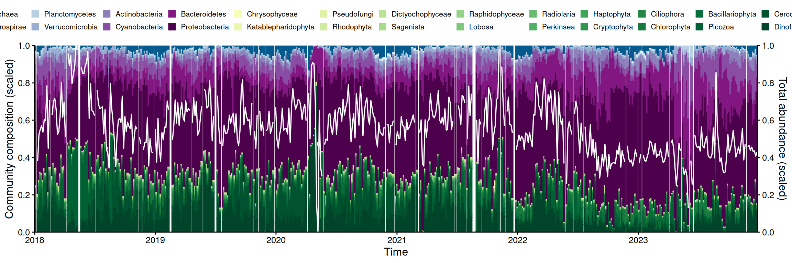
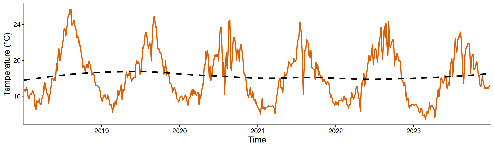

# 加载核心包
library(tidyverse)
# 读取元数据：提供序列 ID 与较高分类学级别的映射关系
taxa_info <- read.csv("data/taxa_information.csv")海洋微生物群落演替与互作网络动态特征复现
项目简介
复现论文： Characterizing the dynamics of marine microbial interactions at Scripps Pier
课程： D2RS 2026 Spring
本项目复现了原论文中关于海洋微生物群落演替与互作网络动态特征的三大核心分析：
- 图 1A — 微生物群落结构随时间演替的长期时间序列变化
- 图 2A-C — 微生物互作网络整体特征与动态变化趋势
- 图 4 — 核心微生物互作网络随外部水温演变的环境依赖性
复现结果：
- 图 1A：群落时间序列堆叠图展示了不同分类群（硅藻、甲藻等）的相对丰度随时间的演替规律，总丰度折线反映了群落整体的季节性波动。
- 图 4：温度依赖性综合面板揭示了水温如何调控核心微生物之间的互作强度与促进/竞争比例。
图 1A：微生物群落的时间序列变化
研究背景与数据准备
为了探究微生物群落结构随时间的演替规律，我们首先复现了原论文图 1A 的群落时间序列分析。
首先，加载数据处理和可视化所需的核心工具包 tidyverse（这也能解决我们环境中未识别基础函数的警告）。接着，我们读取 ASV（扩增子变异序列）的分类学元数据。
数据清洗与分类学聚合
原始测序数据通常是宽表格式且非常庞杂。为了能够进行宏观的群落结构分析，我们需要将其转换为时间序列长表，并将底层的 ASV 丰度聚合到更高的分类学层级（如硅藻、甲藻等）。
# 读取时间序列丰度数据并进行预处理
data <- read.csv("data/data_sequences_0.1_rel_ab_0.5_occ_binned_4_days_with_temperature.csv") %>%
# 宽表转长表，适应时间序列绘图
gather(-date, key = "variable", value = "value") %>%
# 匹配分类学标签
left_join(taxa_info, by = c("variable" = "sequence_ID")) %>%
# 质控：剔除无法进行分类学鉴定的序列
filter(!is.na(domain)) %>%
# 将单个 ASV 的相对丰度聚合到各自的高级分类群中
group_by(date, group, domain) %>%
summarise(rel_ab = sum(value, na.rm = TRUE), .groups = "drop")图表属性配置与总丰度计算
为了让图表具有良好的可读性，我们提取了原作者预设的颜色配置，并强制按照丰度和域（domain）进行排序。同时，我们计算了群落的”总丰度”，并将其标准化到 0-1 之间，以便在图中作为次坐标轴（折线）展示。
plotting_attributes <- taxa_info %>%
select(group, domain, rel_ab_mean, color) %>%
filter(!is.na(domain)) %>%
group_by(group, domain, color) %>%
summarise(rel_ab = sum(rel_ab_mean, na.rm = TRUE), .groups = "drop") %>%
arrange(domain, rel_ab)
plot_data <- data %>%
mutate(group = factor(group, levels = pull(plotting_attributes, "group")))
scale_values <- function(x){(x - min(x, na.rm = TRUE)) / (max(x, na.rm = TRUE) - min(x, na.rm = TRUE))}
total_abundance_scaled <- ungroup(data) %>%
group_by(date) %>%
summarise(rel_ab = sum(rel_ab), .groups = "drop") %>%
mutate(rel_ab = ifelse(rel_ab == 0, NA, rel_ab)) %>%
mutate(rel_ab_scaled = scale_values(rel_ab))核心结果可视化
ggplot(plot_data, aes(y = rel_ab, x = date(date))) +
geom_bar(stat = "identity", aes(color = group, fill = group), position = "fill") +
scale_color_manual(values = pull(plotting_attributes, "color"), name = "") +
scale_fill_manual(values = pull(plotting_attributes, "color"), name = "") +
theme_classic() +
ylab("Community composition (scaled)") +
xlab("Time") +
theme(legend.position = "top",
text = element_text(size = 12),
legend.text = element_text(size = 8),
legend.key.size = unit(0.3, "cm")) +
scale_x_date(date_breaks = "1 year", date_labels = "%Y", expand = c(0, 0)) +
scale_y_continuous(expand = c(0, 0),
sec.axis = sec_axis(~. * 1, name = "Total abundance (scaled)", breaks = seq(0, 1, 0.2)),
breaks = seq(0, 1, 0.2)) +
geom_line(data = total_abundance_scaled, aes(y = rel_ab_scaled), color = "white", linewidth = 0.6) +
guides(colour = guide_legend(nrow = 2), fill = guide_legend(nrow = 2))
温度的时间序列
在跳过极其消耗算力的微生物内部互作计算后，我们直接探索外部环境因子（如温度）对群落演替的潜在影响。原论文的图 4 探讨了这种温度依赖性。由于我们本地的数据集已经包含了水温记录，我们可以直接提取并将其可视化。
# 重新读取原始宽表数据并专门提取温度列
raw_data <- read.csv("data/data_sequences_0.1_rel_ab_0.5_occ_binned_4_days_with_temperature.csv")
# 整理环境数据（剔除多余的物种丰度列，保留时间和温度）
env_data <- raw_data %>%
select(date, temperature) %>%
# 确保日期列被 R 语言正确识别为时间格式
mutate(date = as.Date(date))
# 绘制温度变化折线图
ggplot(env_data, aes(x = date, y = temperature)) +
# 绘制温度主线（橙红色）
geom_line(color = "#d95f02", linewidth = 0.8) +
# 添加一条平滑的长期趋势线（黑色虚线）
geom_smooth(method = "loess", color = "black", linetype = "dashed", se = FALSE) +
theme_classic() +
labs(y = "Temperature (°C)", x = "Time") +
scale_x_date(date_breaks = "1 year", date_labels = "%Y", expand = c(0, 0)) +
theme(text = element_text(size = 12))
图 4：微生物互作网络的环境依赖性
图 4 的核心在于探究水温如何改变微生物之间的网络关系。通过 S-map 模型计算的动态相互作用系数，我们分析了核心物种的互作强度与促进比例随温度的变化，以及整体群落互作分布的温度依赖性。